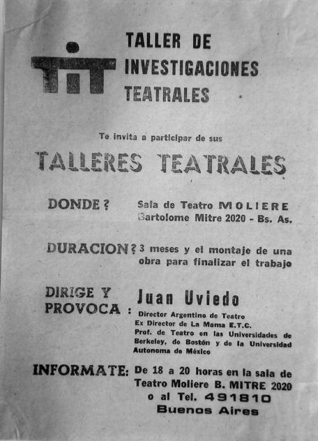
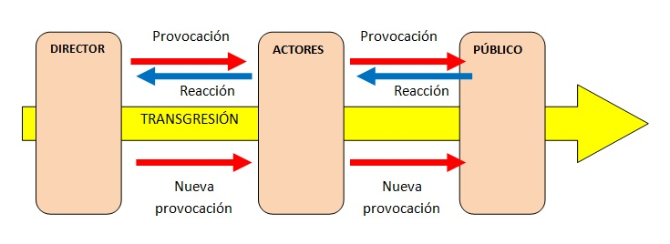
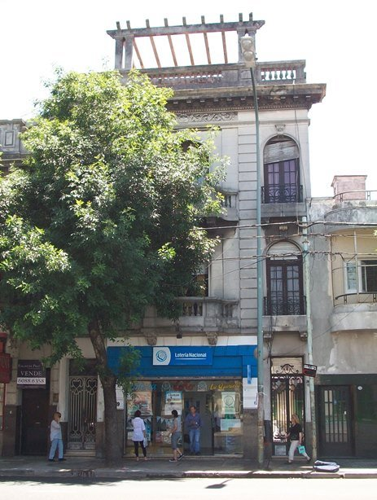

|
|
|
|
Historia del TiT  Buenos Aires, fines de 1976. Hacía unos meses había tomado el poder la Junta Militar. Regía el Estado de Sitio. Juntarse más de 3 personas en un lugar público sin permiso era delito; no había resquicios de libertades y derechos democráticos; las calles eran transitadas por soldados a pie o en camiones, con ametralladoras en mano; los parapoliciales rondaban en sus Ford Falcon. Parecía un país ocupado, invadido por un ejército mercenario al servicio de una potencia extranjera; en realidad, era algo así. Se secuestraban luchadores y disidentes, la gran mayoría jóvenes. Eran torturados y asesinados, escondiéndose su paradero final. En ese contexto nació el TiT, Taller de Investigaciones Teatrales. Su configuración final y su personalidad se debieron a 3 factores que coincidieron en tiempo y lugar:- Un grupo de jóvenes de izquierda que venían haciendo teatro y querían hacer teatro alternativo, entre ellos Gallego (Rubén Santillán), Gali (Marta Cocco) y Beto Burstein. - Un grupo de jóvenes militantes del PST (Partido Socialista de los Trabajadores, por supuesto clandestino en ese entonces) que buscaban integrarse a grupos de arte para obtener cierta contención y semilegalidad y poder seguir haciendo actividad política en ese momento de feroz represión, entre ellos Chiari (Ricardo D’Apice), Chacho (Pablo Navarro Espejo), Misionera (Mónica Flores) y Raúl Zolezzi. Se insertaron en grupos de teatro para intentar influir políticamente en AET (Asociación de Estudiantes de Teatro). - Juan Uviedo, director de un teatro transgresor, con experiencia artística en Europa y Estados Unidos. El resultante fue un grupo de teatro que resistió a la dictadura y a la vez buscó romper parámetros que enchalecaban al arte. Los jóvenes nombrados en los párrafos anteriores ya se conocían antes de tener noticias del TiT. Formaron una lista para presentarse en las elecciones de AET de principios del ’77 y salió segunda, detrás de la lista de la FJC (Federación Juvenil Comunista). Como el margen de diferencia de votos fue estrecho, la lista ganadora invitó a Gali, Beto y Misionera a formar parte de la nueva dirección. Fueron estos 3 jóvenes quienes un día de mayo de 1977, viajando en un tren subterráneo de Buenos Aires, recibieron de manos de alguien unos 15 ó 20 años mayor un volante promocionando el TiT. Era Juan Uviedo. Charlaron unos minutos y los jóvenes quedaron impactados. Gallego y Chiari fueron convencidos de entrar todos juntos al TiT, dejando los grupos adonde se habían integrado anteriormente. Luego ingresaron Chacho y Raúl. Como se ve en el volante entregado por Juan (imagen que inicia esta página), él mismo se presentaba como director y provocador. Para él, el rol de director teatral no era el de determinar todo lo que debían hacer los actores y cómo hacerlo, sino coordinar un proceso de investigación, experimentación y de creación colectiva, cuyo hilo conductor fuera la transgresión (a los cánones artísticos, a la moral y las buenas costumbres, a los límites ficticios que se imponían a la vida). El director provocaba a los actores y recibía sus reacciones para lanzar una nueva provocación. Los actores debían provocar al público y recibir sus reacciones para seguir provocándolo, con el objetivo de lograr su participación, su movilización, su deseo de involucrarse, hasta que en un momento no hubiera diferencia entre actores y público y se animaran a transgredir juntos.  El público no debía permanecer pasivo, el teatro es gente en movimiento representando una mentira, a través de la cual puede colarse una verdad. Por lo tanto lo esencial no era enseñar técnicas especiales para mentir, sino quebrar las trabas que pudiera tener una persona para actuar. Los ejercicios físicos y de expresión corporal ocupaban un alto porcentaje del tiempo en los ensayos. Cualquiera podía actuar con un poco de entrenamiento, no se requerían talentos especiales. Los actores creaban bloques o escenas durante los ensayos (individualmente, o en dúos, tríos o grupos mayores) en base a pautas que resultaban de la investigación. Esos bloques se usaban en los montajes e intervenciones y podían enlazarse o relacionarse de distintas formas. Generalmente se los numeraba pero también se les ponía nombre. Durante estos acontecimientos (elecciones de AET e ingreso al TiT) Gallego y Gali devinieron también en militantes del PST (Gallego ya había tenido una experiencia con el partido), y a la vez los “antiguos” militantes, quienes se habían insertado en grupos artísticos principalmente para hacer actividad política, abrazaron con fuerza la idea de hacer teatro alternativo a partir de la propuesta de Juan de provocación y transgresión, que trasvasaba el teatro e incluso el arte para convertirse en una forma de afrontar la vida, especialmente en el entorno histórico en el que estaban inmersos. Esta combinación de procesos no es un detalle menor, ya que Juan estaría poco tiempo al frente del TiT, y ante su repentina ausencia serían Chiari, Gallego y Gali quienes formaron de hecho una nueva dirección, joven e inexperta, pero con gran pasión. Una pasión que de acuerdo a las características e inclinaciones ideológicas de los jóvenes directores tendría dos patas inseparables con las que caminaría el TiT el resto de su existencia: pasión por intentar revolucionar el arte y pasión por la revolución social. Juan y el TiT ya habían realizado el montaje "La navaja en el sueño", basado en textos de Artaud. Cuando se integraron Chiari, Gallego, Gali y compañía, el TiT estaba haciendo una investigación en base a la novela “El balcón” de Jean Genet, y el fruto del trabajo se montó en una muestra de AET en septiembre en la sala Moliere. En diciembre el TiT realizó el montaje “Fiesta de campo” en el Club Defensores de Almagro, en parte con la investigación de “El balcón” pero mezclada con otros trabajos nuevos. En marzo del ’78 Juan fue arrestado y llevado preso a la Cárcel de Las Flores en Santa Fe, a raíz de una antigua causa por “corrupción ideológica de menores”, comenzada por un militar con un claro objetivo de persecución ideológica contra Juan. Chiari, Gallego y Gali visitaban a Juan en la cárcel y lograron que el abogado socialista Enrique Broquen (uno de los pocos que se animó a defender presos políticos en aquellos años) asumiera su defensa. Mientras, Chiari tomó la posta y siguió dirigiendo al grupo (llamado Grupo Madre, porque la idea era que algunos de sus integrantes abrieran más adelante sus propios grupos con nuevos actores). Se continuó un trabajo comenzado por Juan y el resultado fue el hecho teatral “Babel Lebab”, realizado por primera vez durante una fiesta en el Club Atlético Stentor de Villa Luro en el mes de julio. En esa ocasión un organizador de la fiesta interrumpió la escena en un bloque llamado “La ceremonia de los hábitos del Obispo” (durante el cual Raúl se desvestía para tomar los hábitos) por considerarlo ultrajante e inmoral en un club de barrio; corrió el telón amenazando con una botella en la mano, y luego de una discusión entre la gente presente (ya que parte del público defendió al grupo), los titeanos fueron echados (texto sobre este hecho). En octubre el Grupo Madre, también bajo la dirección de Chiari, realizó la muestra “Los propios dioses” en el Club Social y Deportivo Villa Ballester. A mediados de año Beto abrió su grupo (con el que realizó la intervención en República de los niños) pero se disolvió a fines de año. Entonces abrió un grupo Gallego y a principios del año siguiente Gali hizo lo propio (llamado Grupo de Marta). En ese proceso el Grupo Madre transmutó a Grupo de Ricardo. El 31 de diciembre de 1978 Juan logró fugarse de la cárcel y escapar a Brasil. Desde principios del ’79 el Grupo de Gallego investigó sobre el lenguaje de los sueños y el Teatro de la Crueldad de Artaud, y el resultado se montó durante 4 jornadas en mayo en la sala Espacio libre de San Telmo bajo el nombre “Para cenar: Artaud”. Al mismo tiempo algunos miembros del TiT crearon el Zangandongo, un movimiento más amplio cuyos objetivos eran aglutinar jóvenes de todas las artes para juntos producir más, debatir sobre el rol de los artistas, y luchar contra la censura y la opresión en general. Su Primer manifiesto se entregó al público asistente a “Para cenar: Artaud”. Luego el Zangandongo editó folletines, cuadernos teóricos, organizó “fiestas” (la palabra “fiesta” era una forma de eludir la represión) y el ciclo Alterarte I a fines de año en Teatro del Plata, el primer encuentro masivo de jóvenes artistas bajo la dictadura, que reunió a un importante caudal de la vanguardia artística porteña de aquel entonces. Por su lado el Grupo de Ricardo investigó el Teatro del Absurdo y presentó el montaje "Engordando con Ionesco" en agosto en Espacio libre y en octubre en sala Moliere. Paralelamente creó el hecho teatral "Vaudeville champagne", mostrado a fin de año en el Club Tucumán de Quilmes. El Grupo de Marta investigó textos de Lautreamont y presentó el montaje “¿Quiés es Lautréamont?” en octubre en Espacio libre. En el marco de Alterarte I los 3 grupos del TiT mostraron sus trabajos: el Grupo de Gallego “El teatro y su doble” (basado en el libro homónimo de Artaud, especialmente en su capítulo “El teatro y la peste”), el Grupo de Marta “Para Lautreamont” y el Grupo de Ricardo “Engordando con Ionesco” y “Vaudeville champagne”.
El teatro según
el TiT Cuando se conocía al TiT y sus producciones, se lo amaba o se lo odiaba; no se era indiferente. El TiT tenía su estilo (independientemente de las características particulares de cada grupo), resultante de las enseñanzas de Juan, más los aportes de los jóvenes directores. Por supuesto ese estilo incluía métodos y conceptos de escuelas o corrientes teatrales precedentes, pero mezcladas de un modo especial y con pizcas de elementos nuevos. Algunas de sus características eran: * Se ponía el acento en la investigación y experimentación teatrales, y los hilos conductores eran la transgresión y la movilización del público. * No se contaban historias, con presentación de un conflicto, su desarrollo y su desenlace. Se armaban bloques de creación colectiva en base a las pautas resultantes del proceso de investigación. * Había que romper los roles y espacios del teatro tradicional. Podía y debía hacerse teatro en cualquier lugar, y si se hacía en un teatro, el espacio-escenario no sería respetado. El público debía estar incluido en el espacio teatral. * Los hechos teatrales no estaban subordinados a un texto previo. Había que independizar al teatro de la literatura. Los textos usados eran cortos y escasos. Primaban los movimientos, los gestos, las voces; había monólogos y diálogos improvisados en base a pautas prefijadas o no. * Lo único escrito previamente además de algunos textos (y no en todos los casos) era la partitura: objetivos, pautas, diagrama del espacio, bloques a usar y su secuencia, música, escenografía. Servía como motivación, como dirección inicial, pero no se hacía hincapié en cumplirla a rajatabla. * El hecho teatral era dinámico e impredecible. El director era parte de la puesta y podía dar órdenes de diferentes formas que modificaran las pautas previas (o sea, la partitura). Además los actores debían buscar y “usar” cualquier reacción del público. Generalmente un hecho teatral del TiT se sabía cómo comenzaba, pero no cómo terminaba. * El hecho teatral era único e irrepetible. Si una misma “idea” se realizaba más de una vez, siempre era diferente. Pero generalmente se hacía solo una vez. * Se integraban con énfasis otras artes: música, cine, plástica, poesía. En los ensayos la música era indispensable. La mayoría de los montajes del TiT tenían música en vivo, y algunos incluian proyección de películas super 8 con escenas de la investigación del grupo. Tendían a ser montajes multimediales, aunque en esa época aún no se usaba el término multimedia. * Los ensayos eran abiertos a cualquiera que quisiera presenciarlos. Cada ensayo era un hecho teatral en sí mismo. Raramente en los montajes finales pudieron plasmarse climas y situaciones tal como sucedieron en los ensayos. * Inevitablemente en los hechos teatrales del TiT emergía la trágica situación de asfixia y muerte provocada por la dictadura militar; por lo tanto muchos climas eran tensos, dramáticos y hasta desgarradores; pero había una gran dosis de humor, ya sea a través del absurdo, de la satirización o caricaturización de personajes o instituciones de la cultura oficial, o simplemente porque en un mismo bloque coincidían 2 ó más actores con talento para la comedia, y eso se alentaba. * A pesar de la carga ideológica del TiT, se evitó a toda costa el arte panfletario, o sea usar el arte para difundir mensajes políticos, sociales o culturales prefijados. El objetivo era provocar emociones, pulsiones, reacciones y acciones en la gente a través de signos nuevos. La teoría En el TiT se leía bastante, y se sacaban conclusiones. Algunas fueron escritas. Artaud, Ionesco, Peter Brook, Grotowski, Meyerhold, fueron autores muy leídos. Pero como los directores y un alto porcentaje de sus miembros eran militantes del PST, las lecturas trascendían el teatro y se adentraban en los documentos de los movimientos que unían el arte y la revolución. Fueron estudiados los manifiestos del surrealismo y los escritos de Trotsky y de Bretón, en especial el manifiesto “Por un arte revolucionario independiente” escrito por ambos en 1938 y que sirvió como base para la creación de la FIARI (Federación Internacional de Artistas Revolucionarios Independientes). “La independencia del arte para la revolución, la revolución para la liberación definitiva del arte”, decía el manifiesto. Para los titeanos, revolución en el arte y arte revolucionario eran partes de un mismo proceso. Los entornos históricos no eran tan distintos: en la Europa de 1938 estaban el nazifascismo por un lado y la burocracia stalinista por el otro, y ambos bandos usaban sus aparatos para que el arte y la cultura en general sirvieran a sus intereses políticos de opresión totalitaria. 40 años después, en Argentina, una dictadura sangrienta mataba toda expresión, dejando lugar solo para una inmensa propaganda y un arte oficiales; y el PC (Partido Comunista) usaba su aparato cultural para apuntalar su propuesta política de “convergencia cívico-militar” lanzada desde Moscú. Los titeanos adoptaron como propia la consigna unificadora de Bretón : “Transformar el mundo, decía Marx. Cambiar la vida, decía Rimbaud. Para nosotros, estas dos consignas son una sola”. Con esta frase Bretón finalizó un discurso ante el congreso de una asociación de escritores revolucionarios en 1933, durante el cual rompió definitivamente con el “realismo socialista” del stalinismo. En su libro “La ideología alemana”, Marx y Engels relacionaron la división social del trabajo imperante, con el conflicto entre el desarrollo de algunos individuos como artistas por un lado, y la falta de libre desenvolvimiento en las grandes masas del artista que cada uno lleva en sí, por el otro: “La concentración exclusiva del talento artístico en algunos individuos y su estancamiento en las grandes masas, de las que deriva, es un efecto de la división del trabajo. Aún cuando en ciertas condiciones sociales cada cual pudiera devenir un excelente pintor, esto no impediría que cada cual fuese también un pintor original… Con una organización comunista de la sociedad finalizan en todos los casos las sujeciones del artista a la estrechez local y nacional, que proviene únicamente de la división del trabajo, y la sujeción del individuo a tal arte determinado, que lo convierte exclusivamente en un pintor, un escultor, etc. Tales nombres expresan ya por sí solos la estrechez de su desarrollo profesional y su dependencia de la división del trabajo. En una sociedad comunista, ya no habrá pintores, sino, cuando mucho, hombres que, entre otras cosas, practiquen la pintura.” En base a estos conceptos el TiT diseñó y levantó la consigna “Por menos artistas y por más hombres que hagan arte” (el término hombre se usaba con el real significado etimológico, o sea, ser humano; abarcando la especie humana, no el género masculino). Por supuesto la consigna no estaba dirigida a denigrar individualmente a quienes tuvieron el privilegio de poder desarrollarse como artistas y vivir del arte; lo importante era dejar en claro que se luchaba por otra sociedad en la cual todo ser humano tuviera la oportunidad de ser protagonista en el ámbito de la expresión y la creación. Pero no había que esperar a vivir en esa otra sociedad. Esta consigna el TiT la llevaba a la práctica cotidianamente, en sus propuestas artísticas y de métodos, en sus montajes, en la relación con los jóvenes que se acercaban al taller y con el público en general. Un actor del TiT no se concebía un “artista” con el significado de un ser humano especial o diferente al resto de los mortales. Estos dos postulados: “Transformar el mundo, cambiar la vida”, y “Por menos artistas y por más hombres que hagan arte”, se convirtieron en el Norte de todo el quehacer titeano. Sigue la historia En enero del ’80 partió un autobús de la casona de Av. Córdoba con unos 30 titeanos rumbo a San Pablo para reencontrarse con su maestro Juan Uviedo, que estaba trabajando y viviendo en el Teatro Procopio Ferreira de esa ciudad. Era el primer viaje a Brasil. Durante casi un mes Juan y el TiT realizaron muestras e intervenciones, algunas conjuntamente con grupos brasileros, por ejemplo VSP (Viajou Sem Passaporte). Con éste último el TiT redactó un acuerdo de varios puntos “con la intención de formar un movimiento latinoamericano por la revolución en el arte”. Mientras, en Argentina, Mauri Armus (Mauricio Kurcbard, del Grupo de Gallego) entabló relación con Cucaño, un grupo de jóvenes rosarinos que comenzaba a hacer teatro en la dirección que lo venía haciendo el TiT. La existencia de Cucaño fue conocida a partir de Picun (Roberto Barandalla), un joven que había sido encarcelado y torturado por militar en el PST de Rosario; al salir en libertad condicional se mudó a Buenos Aires, donde se vinculó con el TiT (a fines del '79 fue uno de los fundadores del TiC). Durante el primer semestre del año '80 Mauri viajó todos los fines de semana a Rosario (a unos 300 km de Buenos Aires) para ensayar y participar de muestras e intervenciones con Cucaño, compartir y debatir las consignas y materiales escritos del TiT y del Zangandongo. En uno de esos viajes Mauri llevó el acuerdo firmado por TiT-VSP en enero en Brasil, al cual Cucaño adhirió de inmediato. A principios de
1980 el TiT dejó la casona de Av. Córdoba y alquiló otra más grande en Av.
San Juan al 2800. El TiM instaló un laboratorio musical en una de las salas,
con grabador de cinta abierta, sintetizador, micrófonos e instrumentos;
también organizó seminarios en la casona con artistas reconocidos en el
ámbito de la música experimental (por ejemplo uno de Técnicas
electroacústicas a cargo de Lionel Filippi). Como actividad nueva se organizaron ciclos de cine los sábados
por la noche, y a pesar de estar lejos del microcentro de la ciudad, cada vez más
jóvenes visitaban la casona del TiT. En abril el Grupo de Raúl realizó
el montaje “La marca de Caín” en sala Moliere (basado en la
investigación “La prisión” del Living Theatre). El Grupo de
la Mujer retomó la actividad, organizó estudios de materiales (entre ellos “El
segundo sexo” de Simone de Beauvior, y “Psicoanálisis y feminismo”
de Juliet Mitchel), escribió documentos con sus posturas y tenía ensayos e
investigaciones teatrales propios. El domingo 20 de setiembre se realizó en la
casona una jornada de muestras y producciones conjuntas del TiT y la ECM bajo el
nombre “Primer encuentro de la Revista Viva”, publicación de la ECM.
Durante septiembre y octubre el TiT realizó un Ciclo de Teatro Experimental
en la sala Moliere presentando varios montajes dirigidos por diferentes miembros
de los talleres, entre ellos “Septiembre 80” (Grupo de Marta), “Las
ruahínas” (Grupo de la Mujer), “Picnic”, “Hospital”,
“Quiénes son Artaud” (Grupo de Gallego), “Suero
enfermedad XX” (Grupo de Ricardo). En diciembre cerraron el año
los montajes “Arucol” (Grupo de Gallego, en
sala Moliere) y “La cámara” (Grupo de Raúl, en Teatro del
Picadero). En esos meses, antes y después de este episodio de censura del montaje, hubo varias redadas en la casona, y la policía arrestaba y detenía por varias horas en la comisaría a todos los presentes (titeanos, seguidores, visitantes ocasionales); en medio de ensayos, o de una muestra de cine; a veces con armas largas y un camión para detenidos, otras la policía paraba colectivos de línea y hacía bajar a los pasajeros para trasladar a los titeanos. Era evidente que ya no dejarían al TiT en paz. Como muchos titeanos llevaban una vida clandestina por su militancia política, tenían mucho que perder; el riesgo de convertirse en detenidos-desaparecidos era muy alto. El partido presionó para cerrar la casona por cuestiones de seguridad y les prohibió a sus militantes acercarse a ella. Los titeanos militantes se encontraron en un dilema y debieron optar. La mayoría, con gran dolor, eligió la militancia política. La casona se cerró y se fueron diluyendo los talleres. Más adelante esos militantes tendrían su recompensa: participaron activamente en las luchas que profundizaron la crisis que derrumbó la dictadura. El sábado 14 de noviembre de 1981, integrantes de distintos
grupos del TiT irrumpieron en un espacio de San Telmo donde la Municipalidad de
Buenos Aires había organizado un baile de disfraces. Munidos solo de un tacho
de basura y un palo para hacer ritmos percusivos, los titeanos hicieron bailar a
los presentes y luego los fueron introduciendo en juegos físicos al son del
“tambor” con determinadas consignas. La gente se movía y frenaba, se dirigía
y volvía. Ya contando con su complicidad, aparecieron máscaras y se involucró
a todos en una representación simbólica de “Marat/Sade”
(obra teatral de 1963 escrita por Peter Weiss, investigada en ese entonces
por el TiT). Durante la representación aparecieron decenas de rollos de papel
higiénico y todos fueron desenrollando el papel plásticamente por el lugar. La “muerte” de Marat desencadenó en una
procesión durante la cual la gente envolvía el "cadáver" con el papel higiénico
en forma de tributo, mientras Marat, con máscara, era llevado en
andas por el espacio. Al día siguiente el Grupo
de Marta irrumpió en medio del Teatro
Margarita Xirgu durante el cierre del Encuentro
Juvenil de las Artes, con pancartas y consignas, textos discursados, cientos
de mariposas con frases que llovían desde los
palcos, disfraces, cantos y marchas. Durante varios minutos lograron no solo la
atención sino la adhesión de gran parte del público. Teniendo en cuenta lo
hecho por Gallego en Praça da Republica,
en poco tiempo el TiT había realizado tres o más intervenciones. Los tiempos
no habían cambiado. En Brasil no había demasiada libertad y en Argentina todavía
estaba intacta la loza represiva del gobierno militar. Evidentemente el TiT tendía
más a realizar intervenciones que montajes, un poco por sus convicciones,
productos de discusiones teóricas y debates, pero quizás también porque intuía
los días que se avecinaban. Los tiempos políticos cambiaron drásticamente. Las luchas antidictatoriales en Argentina se hicieron más violentas y masivas, llegando a su pico en la huelga y movilización del 30 de marzo de 1982, en la que hubo duros enfrentamientos con las fuerzas represivas. El gobierno militar creyó “zafar” invadiendo las Islas Malvinas en abril. La guerra y la posterior traición provocaron violentas movilizaciones que culminaron en una crisis política sin precedentes en el país, que repercutió fuertemente en toda Latinoamérica. De hecho, hubo varios días sin gobierno. Fue el comienzo del fin de la dictadura. El TiT Buenos Aires se diluyó aún más a raíz de que los militantes que todavía quedaban en el taller, esta vez sí se volcaron a la militancia política a tiempo completo. Algo similar ocurrió con Cucaño, ya que la mayoría de sus miembros también eran militantes revolucionarios. Durante 1982 el TiT-SP también fue mermando su actividad. Toda la historia de los talleres masivos multidisciplinarios (TiT y afines), un movimiento de arte revolucionario, una tribu artística libertaria, ocurrió dentro de la vida de uno de los regímenes totalitarios más sanguinarios de la historia moderna mundial, que encarceló, secuestró, torturó y asesinó a decenas de miles de luchadores sociales, principalmente jóvenes, provocó el exilio de otras decenas de miles, negó todo derecho humano y democrático, prohibió sindicatos y partidos políticos, aplicó una censura feroz a miles de libros, canciones, películas y obras de teatro, aplastó toda expresión periodística y artística creativa, con el fin de poner de rodillas política y económicamente al país y la región, y a la vez aumentar las ganancias de las grandes corporaciones. Quizás este hecho objetivo, la existencia de la dictadura militar argentina, haya sido otro de los factores que hicieron que el TiT naciera de la forma en que nació y definiera su personalidad.  Casona de Av. San Juan que albergó al TiT durante casi dos años.Después El último montaje firmado como TiT en esta etapa fue “La despedida al ojo del Sr. Juan” (aunque ya hacía dos años que se habían disuelto los talleres), con la participación de Gallego y antiguos miembros de su grupo. Los pocos titeanos que siguieron conectados con el arte, militando o no, debieron buscar espacios o crear los propios donde poder seguir desarrollándose. Raúl Zolezzi formó el grupo Detritus con algunos titeanos (entre ellos Gallego) y nuevos actores, y continuó dirigiendo y produciendo teatro hasta el presente. Mauri, uno de los impulsores primarios del Zangandongo, siguió haciendo arte como escritor, músico y artista multimediático y circense. Marinho, del Grupo de Gallego al igual que Mauri y otro de los promotores del Zangandongo, formó un grupo en Polonia, donde se estableció desde 1983. Marta Gali se fue a vivir a Inglaterra; estudiando filosofía en la universidad King's College de Londres, presentó como tesis para su doctorado el escrito "La resistencia cultural a la dictadura militar argentina de 1976: clandestinidad y representación bajo el terror de Estado", que por supuesto incluyó la historia del TiT. Con el tiempo, la base de esa tesis se convirtió en libro. Desde hace años vive en Italia. Chacho (Pablo Navarro Espejo) había vuelto al país en 1985 y en 1988 fundó Adoquín Video junto a otros realizadores para filmar documentales. En 2006 surgió la idea de hacer una película sobre Juan Uviedo. En 2008 comenzó a filmarse “El provocador” con la producción de Adoquín, y en 2009 un grupo viajó a Brasil para filmar a Juan y su entorno. El 17 de noviembre de 2009, dos semanas después de terminar la filmación, Juan falleció de muerte natural. Tristeza y dolor en todos los titeanos. El documental hizo que varios antiguos titeanos se reencontraran, tanto durante el rodaje como en la exhibición en los cines durante 2010. Más antiguos titeanos fueron contactados cuando la Asociación Argentina de Actores anunció que daría una mención especial al TiT “por ser referente de militancia y resistencia artística” bajo la última dictadura militar, en el marco de la entrega de los Premios Podestá 2014, que se llevó a cabo en el Congreso el 27 de octubre de ese año. Durante este proceso de recuperación de la memoria se vaciaron cajones y viejos baúles, volvieron a ver la luz manifiestos y otros escritos, afiches y proclamas, fotos y recuerdos; se digitalizaron películas filmadas originalmente en super 8. Una de las consecuencias es este sitio web, donde extiteanos compartimos humildemente el bagaje de los talleres, con la ilusión de que sea un aporte para jóvenes artistas que deseen levantar banderas de experimentación y libertad, para transformar el mundo y cambiar la vida.
|